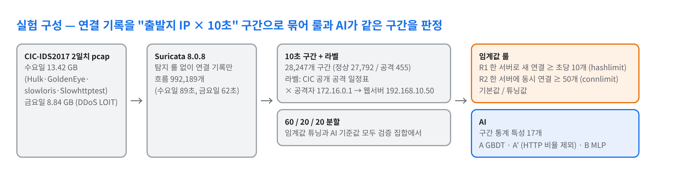
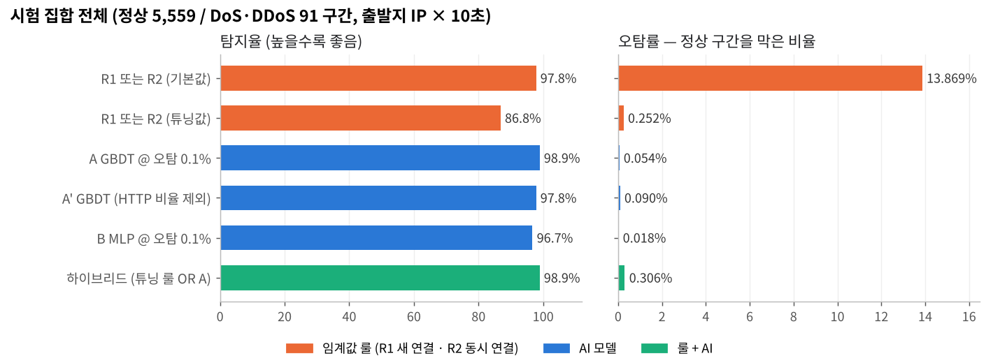
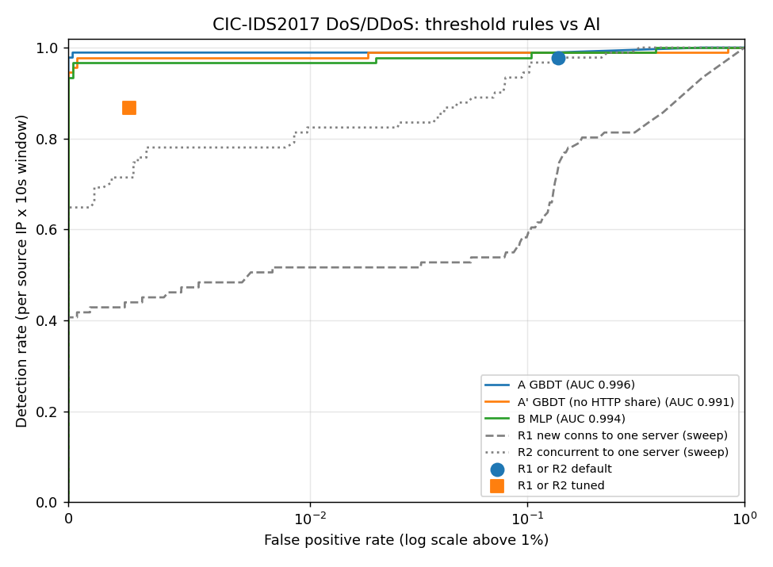
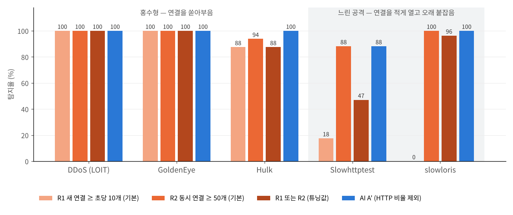

개인 프로젝트 · 룰 기반 vs AI 탐지 비교 3단계
DDoS — 임계값 룰 vs AI
개인 프로젝트Colab 실행 완료
2단계에서 시그니처 룰(ET Open)은 DDoS를 거의 잡지 못했습니다. DoS/DDoS는 보통 시그니처가 아니라 "IP당 초당 새 연결 수 · 동시 연결 수" 임계값으로 막습니다. 그래서 iptables hashlimit·connlimit과 같은 방식의 룰 2개를 만들고, 같은 트래픽을 출발지 IP × 10초 구간으로 묶어 AI와 비교했습니다.
DoS/DDoS는 "연결이 비정상적으로 많다"는 뚜렷한 흔적을 남겨서 룰과 AI 모두 잘 잡았습니다. 차이는 정상 사용자를 덜 막는 정도에서 났습니다. 기본 임계값은 정상 구간의 13.9%를 막았고 그중 80%는 내부 서버 한 대(192.168.10.3)였습니다. 또 느린 공격(slowloris 등)은 "동시 연결 수" 룰로만 잡혀서, 흔히 거는 "초당 연결·요청 수" 제한만으로는 부족했습니다.
1. 실험 구성

| 구분 | 사용한 것 | 이유 |
|---|---|---|
| 데이터 | CIC-IDS2017 수요일(DoS Hulk·GoldenEye·slowloris·Slowhttptest)·금요일(DDoS LOIT) 원본 pcap | 홍수형과 느린 공격이 모두 들어 있음. 2단계와 같은 공개 미러에서 받을 수 있음 |
| 연결 기록 | Suricata 8.0.8을 탐지 룰 없이 실행해 연결(흐름) 기록만 생성 | 연결 시작·끝 시각, 방향별 패킷·바이트, TCP 플래그를 얻기 위함 |
| 판정 단위 | 출발지 IP × 10초 구간 | 임계값 룰은 "이 IP가 지금 너무 많이 붙는다 → 이 IP를 막는다"로 동작 |
| 룰 R1 | 한 서버로 새 연결 ≥ 초당 10개 (10초에 100개) | iptables hashlimit, nginx limit_req와 같은 방식 |
| 룰 R2 | 한 서버에 동시 연결 ≥ 50개 | iptables connlimit, nginx limit_conn과 같은 방식 |
| AI | 구간 통계 17개(연결 수, 목적지 수, 응답 없는 연결 비율, 지속 시간, 바이트 등) + GBDT(CPU) / MLP(T4 GPU) | IP 주소와 시각은 넣지 않음 |
룰은 두 가지로 비교했습니다. 기본값은 관리자가 처음 흔히 거는 값이고, 튜닝값은 AI 기준값과 똑같이 검증 집합에서 정상 구간 오탐률이 0.1%가 되도록 올린 값입니다 (새 연결 10초에 393개, 동시 연결 335개).
노트북: ddos_lab_phase3.ipynb (Colab T4 GPU, 처음부터 약 30분, pcap 22 GB)
2. 실행하며 고친 세 가지
이번 단계는 결과를 보고 설계를 세 번 고쳤습니다. 숫자보다 이 과정이 더 중요한 배움이었습니다.
| 발견한 문제 | 증상 | 고친 방법 |
|---|---|---|
| 라벨이 엉뚱한 공격에 붙음 | CIC 원본 slowloris 흐름 5,796개가 2개로, GoldenEye 10,293개가 94,006개로 바뀜. 공격자가 하루 동안 같은 출발 포트를 여러 공격에 다시 써서, IP·포트만으로 맞추면 공격끼리 섞임 | CIC가 공개한 공격 일정표(현지 시각 UTC−3)와 공격자 172.16.0.1 → 웹서버 192.168.10.50 조건으로 구간 라벨을 붙임. 공격 시간 안과 직전 같은 길이 시간의 연결 수를 비교해 일정표가 맞는지 검증 (slowloris 3,894 vs 0, DDoS 95,683 vs 0) |
| 룰이 서버가 볼 수 없는 연결까지 셈 | 기본 룰 오탐 25.5%. 직원 PC의 웹 브라우징·DNS까지 합쳐 "동시 연결 50개"를 넘음 | 서버에 거는 룰은 자기에게 온 연결만 셈 → 한 서버(목적지 IP) 기준으로 다시 계산. 오탐 25.5% → 13.9% |
| AI가 지름길을 씀 | 모델 A 중요도 1위가 "구간 중 HTTP 연결 비율". 정상 구간 평균 3%, 공격 구간 59–100%. 이 데이터에서는 웹서버에 평문 HTTP로 오는 정상 트래픽이 거의 없음 | HTTP 비율을 뺀 모델 A'를 따로 학습해 비교. 탐지율 98.9% → 97.8%로 거의 같아, 지름길 없이도 연결 수·지속 시간으로 구분됨을 확인 |
이 밖에 두 날짜를 합치자 라벨 붙이는 단계가 한 시간 넘게 끝나지 않았는데, 연결 백만 개마다 파이썬 함수를 부르던 부분을 표 전체 연산으로 바꿔 17초로 줄였습니다.
3. 결과

| 방식 | 탐지율 | 오탐률 | 놓친 공격 구간 | 막힌 정상 구간 |
|---|---|---|---|---|
| R1 새 연결 (기본) | 52.7% | 3.26% | 43 | 181 |
| R2 동시 연결 (기본) | 96.7% | 11.15% | 3 | 620 |
| R1 또는 R2 (기본) | 97.8% | 13.87% | 2 | 771 |
| R1 또는 R2 (튜닝) | 86.8% | 0.25% | 12 | 14 |
| A GBDT @ 오탐 0.1% | 98.9% | 0.05% | 1 | 3 |
| A' GBDT (HTTP 비율 제외) @ 오탐 0.1% | 97.8% | 0.09% | 2 | 5 |
| B MLP @ 오탐 0.1% | 96.7% | 0.02% | 3 | 1 |
| 하이브리드: 튜닝 룰 또는 A | 98.9% | 0.31% | 1 | 17 |
웹서버 관리자 입장에서 보면
위 표의 정상 구간에는 웹서버에 접속하지 않은 PC도 들어 있습니다. 피해 웹서버(192.168.10.50)로 연결한 구간만 골라 보면, 실제 서버 관리자가 판단하게 되는 상황에 가깝습니다.
| 웹서버로 간 시험 구간 (정상 481 / 공격 91) | 탐지율 | 오탐률 | 막힌 정상 구간 |
|---|---|---|---|
| R1 또는 R2 (기본) | 97.8% | 2.08% | 10 |
| R1 또는 R2 (튜닝) | 86.8% | 0.21% | 1 |
| A GBDT | 98.9% | 0.00% | 0 |
| A' GBDT (HTTP 비율 제외) | 97.8% | 0.00% | 0 |

공격 종류별 — 홍수형 vs 느린 공격

| 공격 | 10초당 새 연결 (중앙값) | 동시 연결 (중앙값) | 연결 평균 지속 | 잡은 룰 |
|---|---|---|---|---|
| DDoS (LOIT) | 823 | 524 | 6.8초 | R1·R2 모두 |
| Hulk | 2,449 | 88 | 0.7초 | R1·R2 모두 — 짧은 연결을 쏟아부어 동시 연결도 88개 |
| GoldenEye | 240 | 749 | 11.0초 | R1·R2 모두 |
| Slowhttptest | 2 | 334 | 52.4초 | R2만 — 새 연결은 정상 수준 |
| slowloris | 25 | 430 | 61.6초 | R2만 (R1은 0%) |
| 정상 | 2 | 1 | 1.3초 | — |
느린 공격은 연결을 몇 개만 열고 헤더를 아주 천천히 보내 서버의 연결 슬롯을 붙잡습니다. 그래서 초당 연결 수 제한(R1)만 걸어 두면 slowloris는 하나도 막지 못합니다. 반대로 튜닝으로 동시 연결 기준을 335개까지 올리자 Slowhttptest 탐지가 88% → 47%로 떨어졌습니다.
기본 룰에 막힌 정상 사용자
| 정상 IP | 막힌 구간 | 한 서버로 10초 최대 새 연결 | 최대 동시 연결 |
|---|---|---|---|
| 192.168.10.3 (내부 서버) | 3,113 | 356 | 368 |
| 192.168.10.5 | 121 | 319 | 157 |
| 192.168.10.8 | 113 | 775 | 388 |
| 그 외 10개 PC | 550 | — | — |
오탐 구간 3,897개 중 80%가 내부 서버 192.168.10.3 한 대였습니다. 실무라면 임계값을 올리기보다 이 서버를 예외(화이트리스트)로 빼는 것이 맞습니다. 임계값을 일괄로 올린 "튜닝값"은 오탐은 줄였지만 느린 공격을 놓치기 시작했습니다.
탐지까지 걸린 시간
| 공격 (지속) | 룰 기본값 | 룰 튜닝값 | AI (A) |
|---|---|---|---|
| DDoS LOIT (20분) | 0초 | 10초 | 0초 |
| GoldenEye (10분) | 0초 | 120초 | 0초 |
| Hulk (18분) | 0초 | 0초 | 0초 |
| Slowhttptest (20분) | 0초 | 0초 | 0초 |
| slowloris (22분) | 0초 | 50초 | 0초 |
"0초"는 공격의 첫 10초 구간에서 바로 잡았다는 뜻입니다. 높게 올린 임계값은 공격이 충분히 커질 때까지 기다리게 됩니다.
4. 처음 보는 공격 — 2단계와 반대 결과
2단계(IPS)에서 AI는 학습에서 뺀 공격을 0–26%밖에 잡지 못했습니다. 이번에도 공격 종류 하나씩 빼고 학습해 봤습니다.
| 공격 | 시험 구간 | A (학습에 포함) | A (학습에서 뺌) | A' (학습에서 뺌) | 룰 기본값 |
|---|---|---|---|---|---|
| DDoS | 24 | 100% | 100% | 100% | 100% |
| GoldenEye | 7 | 100% | 100% | 100% | 100% |
| Hulk | 16 | 100% | 100% | 100% | 100% |
| Slowhttptest | 17 | 94.1% | 94.1% | 88.2% | 88.2% |
| slowloris | 27 | 100% | 100% | 100% | 100% |
이번에는 처음 보는 공격도 거의 다 잡았습니다. DoS 계열은 도구가 달라도 "한 서버에 연결이 비정상적으로 많고 오래 열려 있다"는 공통 모양이 있어서, 다른 DoS 공격으로 배운 모델이 그대로 통했습니다. 반면 2단계의 포트 스캔·DDoS·봇넷은 서로 모양이 전혀 달랐습니다. AI가 새 공격을 잡을 수 있는지는 "새 공격이 이미 배운 공격과 닮았는가"에 달려 있다는 것이 두 실험을 합친 결론입니다.
5. 결론과 주의할 점
| 임계값 룰 | AI | |
|---|---|---|
| 탐지 | 느린 공격은 R2(동시 연결)로만 잡힘 — 둘 다 걸면 97.8% | 97.8–98.9%, 학습에서 뺀 DoS도 88–100% |
| 오탐 | 기본값 13.9% (80%가 내부 서버 1대) → 예외 처리 필요 | 0.02–0.09% |
| 설명·운영 | "초당 393개 초과"처럼 이유가 분명하고 iptables·nginx로 바로 적용 | 점수만 남음. 정상 트래픽이 바뀌면 다시 학습 |
세 단계 중 룰과 AI의 차이가 가장 작았습니다. DoS는 숨기기 어려운 "양"의 공격이라 단순한 임계값으로도 잘 잡히고, AI의 이득은 주로 정상 사용자를 덜 막는 것이었습니다. 실무라면 R1·R2를 함께 걸고, 많이 접속하는 내부 서버는 예외 처리하는 것만으로 대부분을 얻을 수 있고, AI는 그 위에서 오탐을 줄이는 보조 판단으로 쓰는 것이 현실적입니다.
이 숫자를 그대로 일반화하면 안 되는 이유
- 공격 구간이 455개(시험 91개)로 적고, 공격자가 NAT 뒤 IP 하나(172.16.0.1)라 진짜 분산 공격(수천 개 IP가 각각 조금씩)과는 다릅니다. 그런 공격은 IP별 임계값으로는 막기 어렵습니다.
- 라벨은 공개 일정표 기준이라 공격 시간 안의 정상 연결이나 시계 오차가 섞일 수 있습니다 (시작·끝 ±2분은 제외).
- 같은 날 안에서 무작위로 나눠, 비슷한 구간이 학습과 시험에 함께 들어 있습니다.
- 이 데이터에는 웹서버로 가는 정상 HTTP가 거의 없어 AI가 쓸 수 있는 지름길이 있었습니다 (A'로 확인).
6. 다음 단계
| 순서 | 할 일 |
|---|---|
| 1 | 192.168.10.3을 예외 처리한 뒤 기본 임계값 룰을 다시 평가 — "튜닝 = 임계값 올리기"가 아니라 "예외 처리"일 때의 결과 |
| 2 | 수천 개 IP로 나뉜 반사·증폭 공격이 있는 CIC-DDoS2019로 IP별 임계값의 한계 확인 |
| 3 | 세 단계 결과를 한 장으로 정리 — 공격 종류별로 룰과 AI 중 무엇이 맞는지 |